NetQuarry
Summer 2015, Summer 2017
• I created a Facebook chatbot using Javascript for StaffGarden, one of NetQuarry's applications and a nurse portfolio website used to schedule interviews with hospitals.
• Created with Amazon Lex and Amazon Lambda
NetQuarry
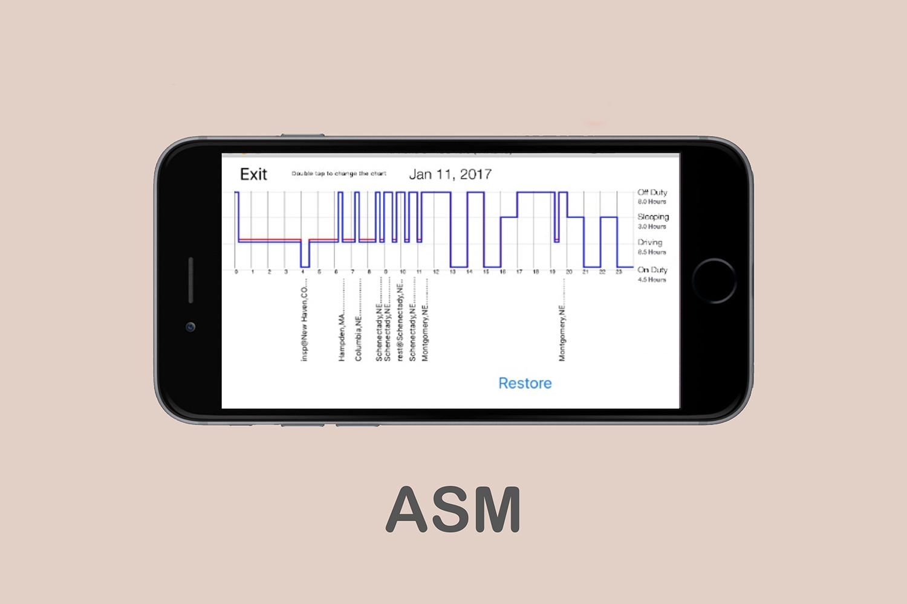
Auto Security and Monitoring Inc.
Summer 2015, December 2016 - January 2017
• Over winter break, I created an iOS app for ASM which automatically creates a modifiable digital log book for truck drivers, utilizing information from the company database.
• Created with Swift in Xcode
Auto Security and Monitoring Inc.
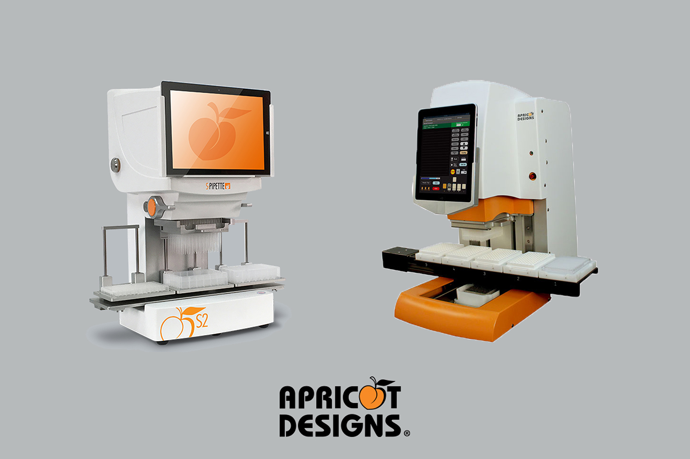
Apricot Designs Inc.
Summer 2017
• Apricot Designs Inc. is a biotechnology company that manufactures pipettors.
• I assisted with developing and designing an iOS app that controls one of the pipettors.
• Created with Objective-C in Xcode
Apricot Designs Inc.
September 2017 - May 2018
• I was on the Digital Service Team for OCTO, the student government tech office at Berkeley.
• We worked on a full-stack web application for the Chief Personnel Office.
• Created with Ruby on Rails and AngularJS
ASUC Office of the Chief Technology Officer
September 28th, 2018
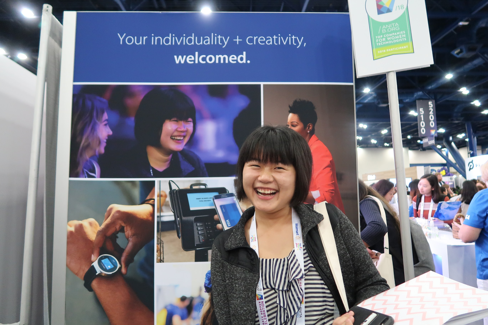
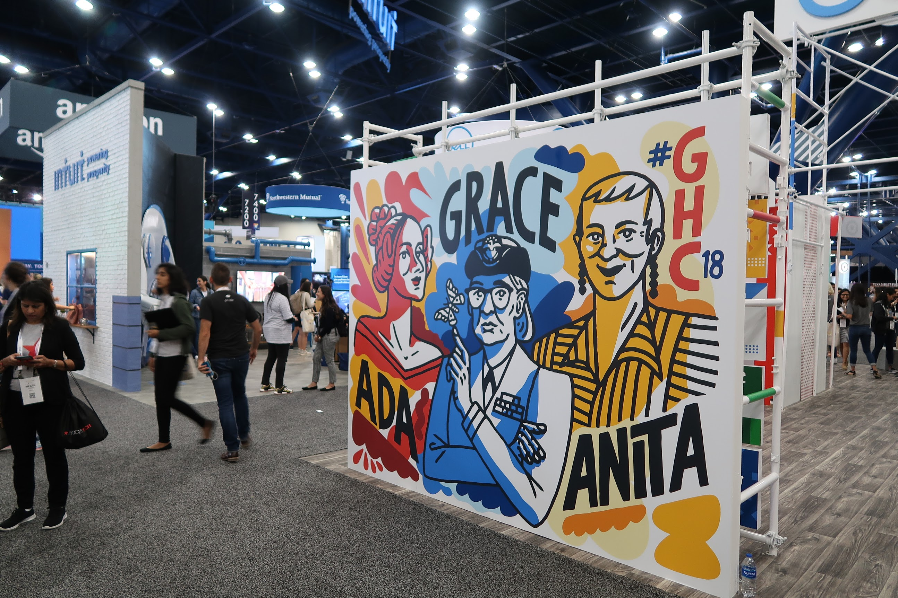
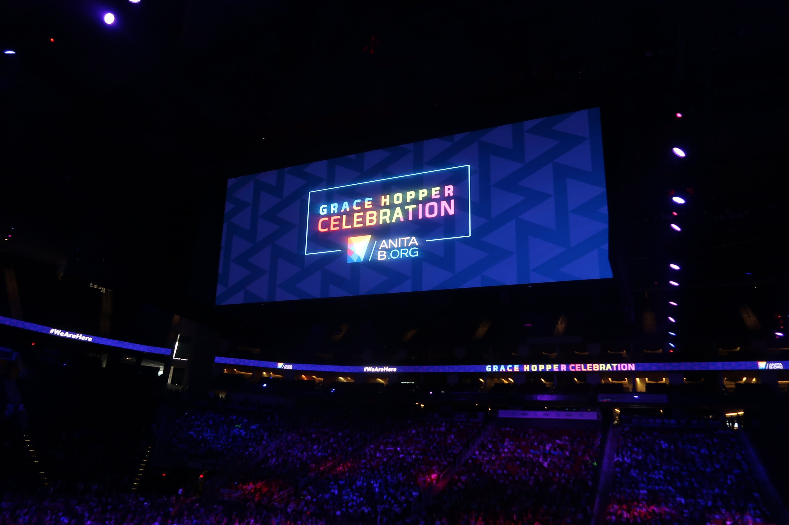
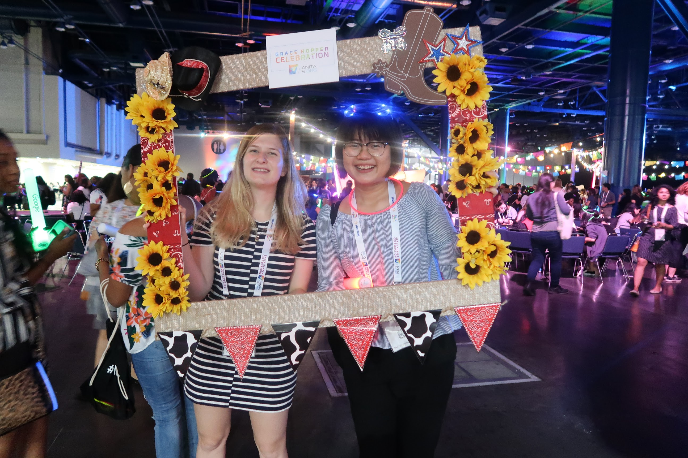
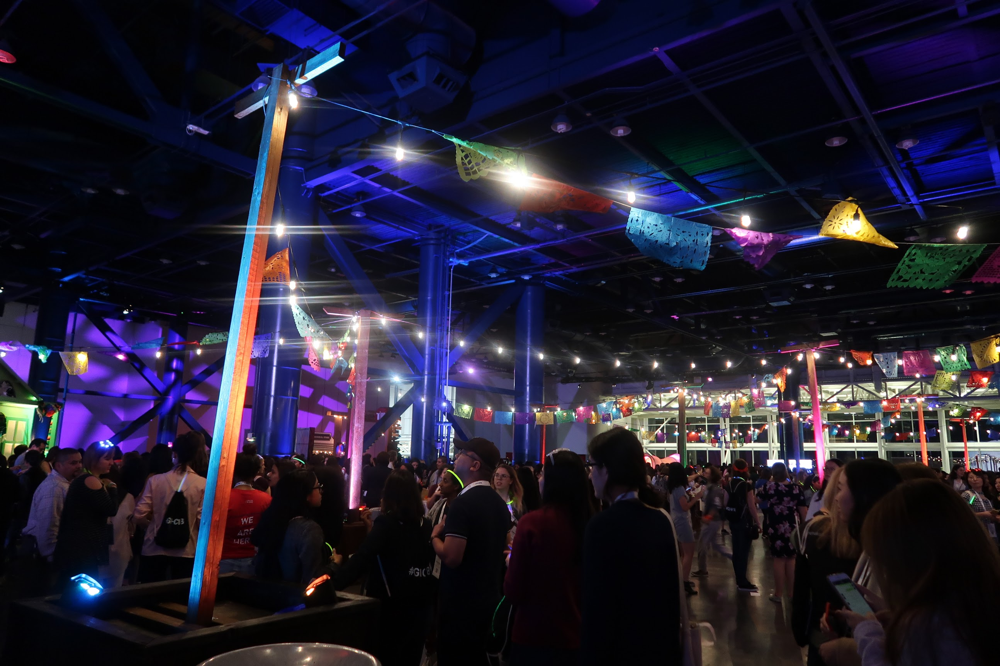
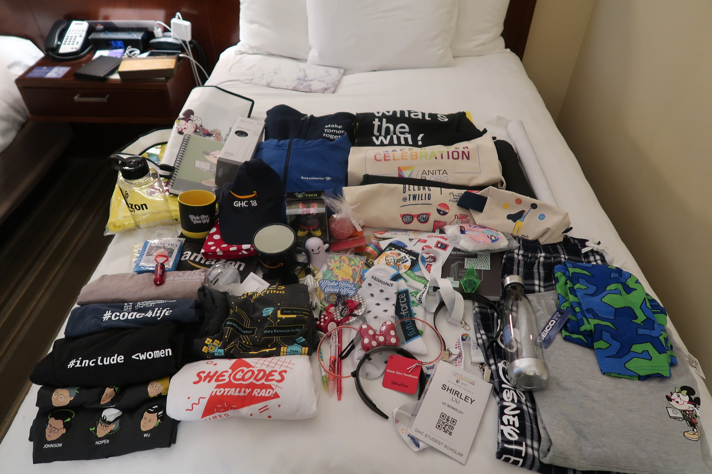
ANOTHER GHC
Another year, another Grace Hopper Conference for the books! This year's conference was just as exciting with almost 22,000 amazing women gathered at George R. Brown Convention Center in hot and humid Houston, TX. Thank you AnitaB.org for the scholarship and all the accomodations! Since I was hunting for junior year internships for the summer, the conference sadly became a hectic week of interviews, and with that came a lot of rejections, but it's all part of the process. However, on a brighter note, I got even better swag than last year including gecko leggings from Geico, a Sims Plumbob headband, and a bath bomb. It is so amazing to see how this conference grows every year. Company party lineup: Instagram, Amazon, Disney, Snapchat, Google
October 29th, 2017


OH SWEET TEXAS
This semester, I got the opportunity to attend the SWE National Conference in Austin, Texas funded by our SWE chapter. It was five days of delicious food, seeing empowering women speak about working in the workplace, discovering new engineering companies I have never heard of, getting lots of tech company swag, and of course, sightseeing in the beautiful city with other SWE members. I finally got to try the legendary Voodoo Doughnuts after my history teacher, Mr. Madrid, recommended it to me in high school. Since the conference was a week before Halloween, I experienced the Day of the Dead parade on the streets of Austin, and at night, the bustling city dressed up in costumes in the freezing cold.
October 5th, 2017
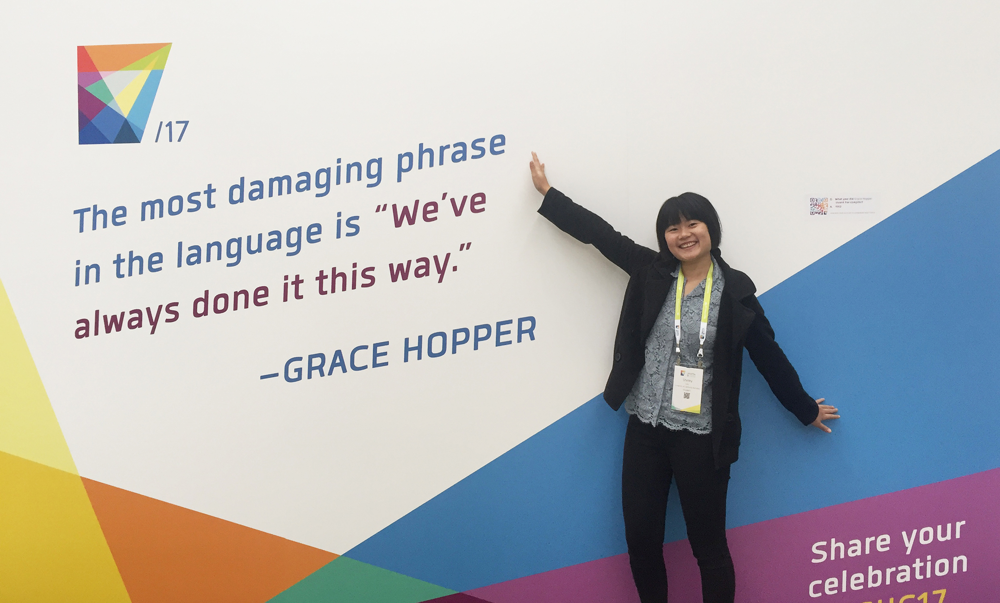

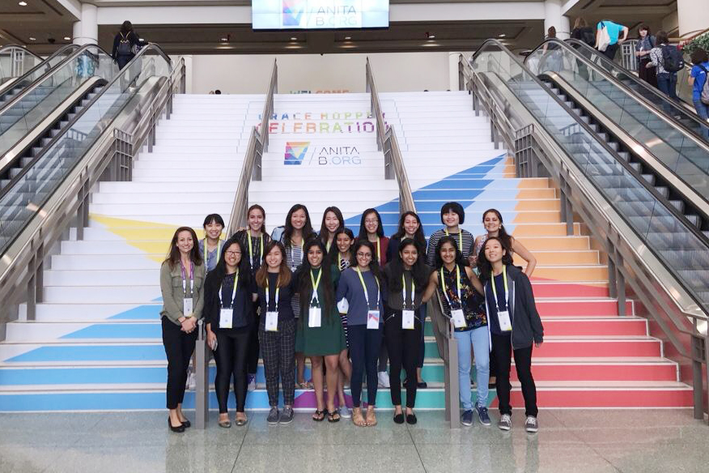
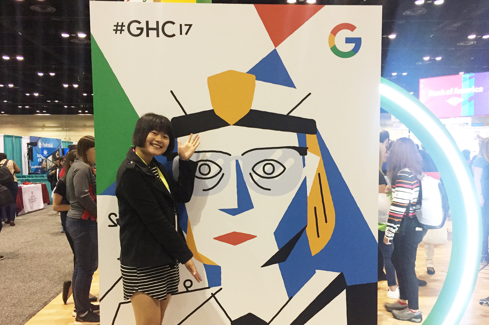


WHO RUN THE WORLD?
Going to the Grace Hopper Conference in Orlando, Florida was one of the best experiences this semester. I was fortunate to receive a scholarship through PwC to attend the conference with everything paid for. Though it was pretty much a mad dash for internships and interviews, the conference was a great place to meet other women in tech and hear them speak. Melinda Gates was the keynote speaker! Since this was my first conference, I was very overwhelmed, talking to company after company at the career fair for three straight days, not knowing what to expect. It was difficult to market myself to company reps genuinely, but as I talked more and more, I was more comfortable with exhibiting my achievements and experiences, positively. Oh, I forgot to mention that the swag at GHC was amazing and the best I have ever seen, and I even got to go to the Snapchat after party and Disneyworld!
created by Shirley Liu.